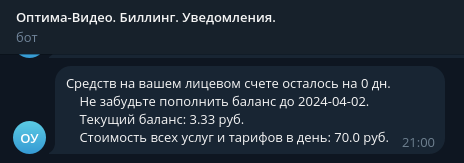

Принципы работы системы
1. Каждый день, в 00:00 по МСК система производит попытки списания средств с балансов пользователей за подключенные тарифы и доп.услуги за наступивший день и вносит результаты в историю операций.
2. Каждые 5 минут системой проверяются устройства, на которых присутствуют блокировки тарифов/допуслуг за неоплату. Если обнаруживается, что средств у клиента стало достаточно, то производится списание, вносятся результаты в историю операций, разблокируется тариф/допуслуга на устройстве.
3. Каждый день в 12 часов система производит расчёты и шлет уведомления клиентам в Telegram о количестве оставшихся оплаченных дней при их текущих расходах.
Система автоматически переводит устройства с платными тарифами, за которые не платили более полугода на тариф типа «Базовый», т.е бесплатный.